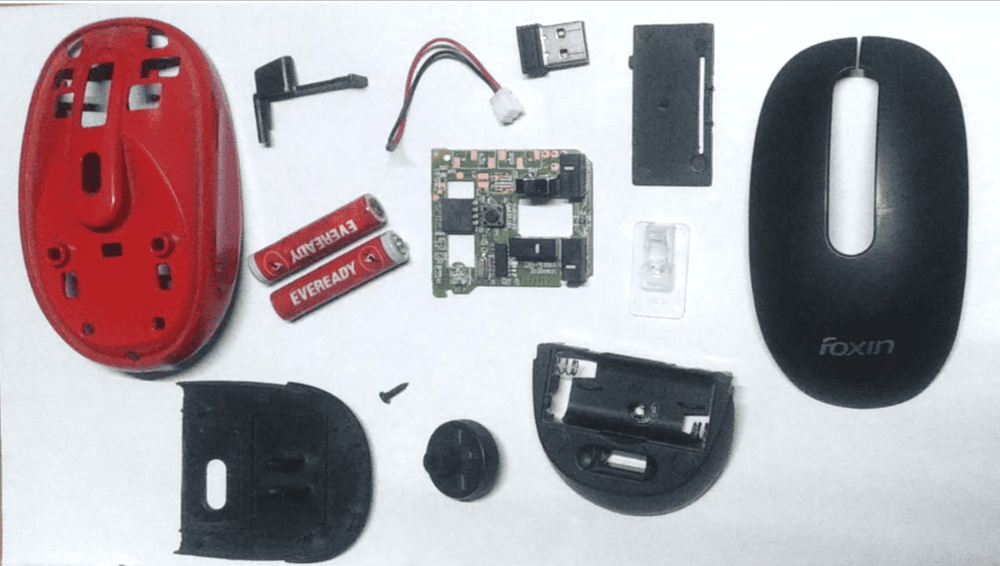

In this session, we explored the concept of system thinking by applying reverse engineering techniques to dismantle and analyze a wireless mouse. This allowed us to understand how different subsystems interact to achieve overall functionality. Each component was carefully studied for its role in the design and operation of the mouse.
We started by carefully opening the wireless mouse and laying out all individual parts. This gave us an overview of the internal architecture and helped us identify each component for detailed study.

The outer frame houses all the internal components. It's ergonomically shaped for comfortable grip and protects the internal circuit from dust and damage.

The left and right click buttons are mechanically linked to the internal push buttons. They are designed for durability and responsiveness.

These are the actual electronic switches that register clicks. They are soldered onto the PCB and activate when the top buttons are pressed.

The DPI (Dots Per Inch) switch allows users to change the mouse sensitivity. Internally, it sends signals to the microcontroller to adjust tracking resolution.

The scroll wheel includes a mechanical roller and an optical encoder. It allows smooth vertical navigation through software interfaces.

The printed circuit board (PCB) contains the microcontroller, switches, optical sensor, and battery terminals. It is the heart of the mouse where signals are processed and transmitted.

Various mechanical structures inside the mouse help in converting user input into electronic signals, including button plungers, springs, and the wheel encoder.

The mouse includes a 2.4GHz RF module for communicating with a USB receiver. It transmits the processed signals from the microcontroller to the host computer.

Other internal parts include resistors, capacitors, battery holders, and LEDs for power indication. All these contribute to stable operation and user interaction.

From this disassembly and analysis, we understood critical system thinking attributes such as modularity, signal flow, feedback loops, mechanical-electronic interface, and user ergonomics. It emphasized how complex systems are designed and integrated efficiently.

This session enabled us to approach technology not just as users but as system thinkers. Reverse engineering the wireless mouse helped us appreciate the interdependence of hardware and firmware in designing compact, efficient, and user-friendly devices. It strengthened our analytical skills and deepened our understanding of embedded systems.